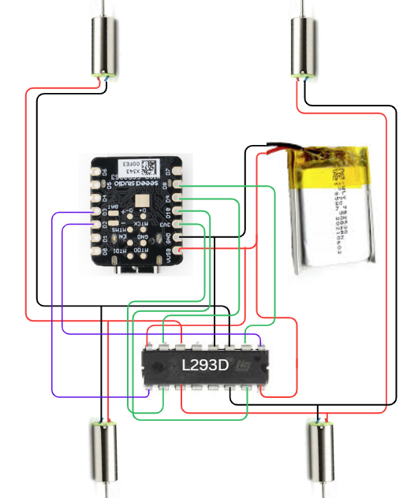
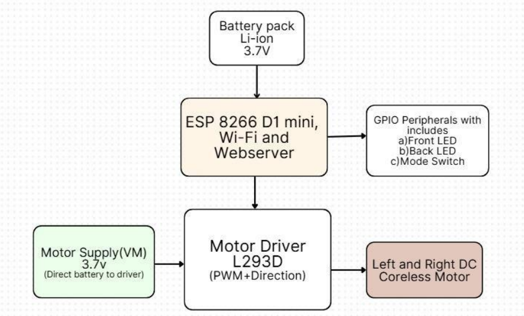
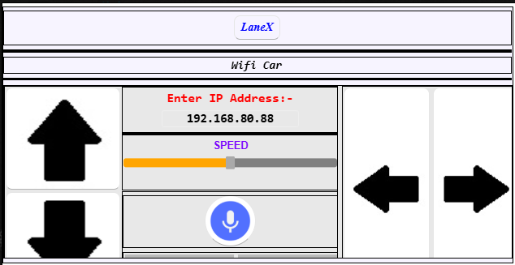
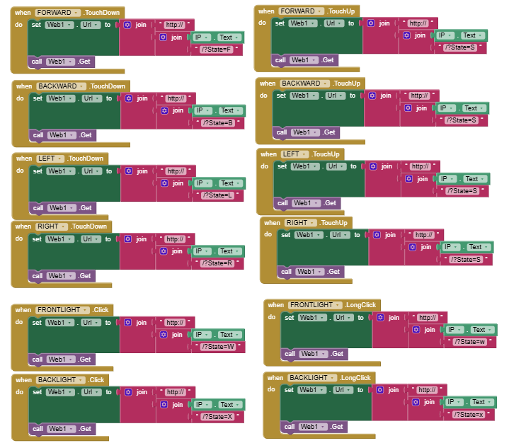

Project Overview
Built for wireless mobility and real-time surveillance
What is Lane X?
Lane X is a Wi-Fi controlled surveillance RC car designed to demonstrate the integration of embedded systems, wireless control, live camera feedback and mobile application based operation.
Core Idea
The ESP32 works as the main controller. It handles movement commands, camera streaming, light control and web server communication, allowing the user to control the vehicle through a mobile app or browser.
Why It Matters
The project shows how a compact low-cost rover can be used for inspection, surveillance, education, robotics prototyping and areas where remote visibility is required.
Live Demonstration
Project demo video
Watch the working demonstration of Lane X showing Wi-Fi control, camera-based surveillance and real-time movement.
Capabilities
Key features of the system
Wi-Fi Control
Wireless control through ESP32 using app and web based commands.
Camera Streaming
Live visual feedback for surveillance and remote inspection.
Web Server
Browser based access for controlling the RC car interface.
Mobile App
MIT App Inventor based app for movement, lights and speed control.
Motor Control
Four DC motors controlled through motor driver circuitry.
LED Control
Front and rear lights controlled through GPIO signals.
System Logic
How Lane X works
ESP32 starts Wi-Fi and web server
The ESP32 creates the communication environment and waits for user commands.
User connects through app or browser
The mobile app or web page sends movement commands to the ESP32.
ESP32 processes movement commands
Commands like forward, backward, left, right and stop are processed in real time.
Motor driver controls the car
The motor driver receives signals from the ESP32 and drives the DC motors.
Camera provides visual feedback
The camera stream helps the user monitor the surroundings while controlling the car.
Technology Stack
Hardware and software used
Hardware
Software
Visual Documentation
Project gallery
Final Prototype
Physical RC car prototype built for the expo.

Circuit Diagram
Electrical wiring and control connections.

System Flowchart
Flow of hardware and software operation.

Mobile App UI
App interface for controlling the RC car.

App Inventor Code Blocks
Touch controls, speed control, lights and command logic.
Real World Relevance
Applications and industrial significance
Mining Inspection
Can be adapted for inspecting hazardous or inaccessible areas where human movement is risky.
Warehouse Automation
Can be used as a base concept for small automated guided vehicles and inspection rovers.
Search and Rescue
Can support remote visibility in unsafe zones such as collapsed structures or disaster affected locations.
Project Team
Built by
Basudeo Krishnan
B.Tech – Electronics and Electrical Engineering
Bhargavi Siva
B.Tech – Electronics and Electrical Engineering
Explore the complete project
View the report, source files, circuit design, firmware and project documentation from the GitHub repository.